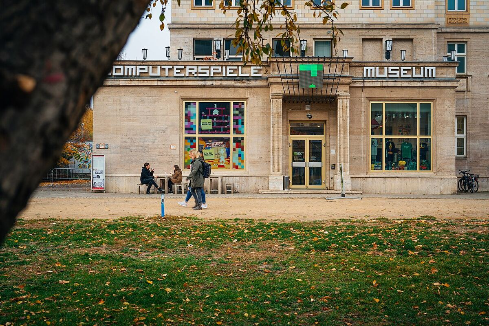
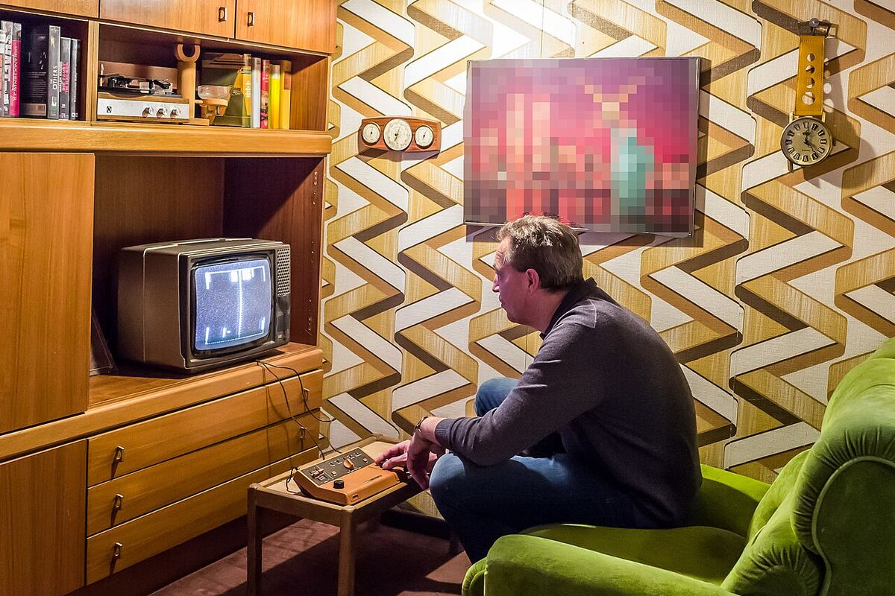

Adres
ComputerspielemuseumKarl-Marx-Allee 93a
10243 Berlin (Friedrichshain)
Dichtstbijzijnde halte: U Weberwiese (U5), 3 minuten lopen.
Kunst & Kultur · Berlin-Friedrichshain
Speel je in één middag door vijftig jaar gamegeschiedenis, van Pong tot PlayStation, midden op de Karl-Marx-Allee.
Dagelijks open van 10:00 tot 20:00



Sinds 1997 eerste gamemuseum ter wereld
In het kort
Het Computerspielemuseum opende in 1997 in Berlijn als het eerste vaste museum ter wereld over computerspellen. Sinds 2011 zit het in een monumentaal gebouw aan de Karl-Marx-Allee, de brede DDR-boulevard in Friedrichshain.
De vaste tentoonstelling Computerspiele. Evolution eines Mediums heeft meer dan 300 objecten. Je loopt door een arcadehal in jaren-80-stijl en door ingerichte woonkamers uit de jaren 70, 80 en 90, waar je op de consoles van toen kunt spelen. De "Wall of Hardware" laat ruim 70 spelcomputers zien. Ook staat er de beruchte kunstinstallatie PainStation: een Pong-tafel die je een (kleine!) elektrische schok of klap geeft als je een punt verliest.
Naast de vaste collectie zijn er wisselende tentoonstellingen. Op dit moment loopt bijvoorbeeld A Fantastic Failure, over de geflopte Nokia N-Gage, een telefoon die tegelijk spelcomputer wilde zijn.
Wij zijn CSD-studenten: we leren software maken. In dit museum zie je waar interactieve software vandaan komt, en je mag alles zelf proberen.
Van Computer Space en Pong (jaren 70) tot moderne consoles. Je ziet hoe programmeurs met een paar kilobyte geheugen toch een spel konden maken. Dat zet je eigen code in perspectief.
Joysticks, lichtpistolen, de Power Glove: in elke vitrine zie je hoe mensen een interface bedienen. Voor XR- en GD-studenten is dit net zo interessant.
Op tientallen apparaten kun je echt spelen. Daag je klasgenoten uit op de arcadekasten of, als je durft, aan de PainStation.
De tentoonstelling over de Nokia N-Gage laat zien hoe een technisch goed product toch mislukt door slecht productontwerp. Dat is een les voor iedere developer.
Het museum is elke dag tot 20:00 uur open. Na het groepsprogramma kun je dus nog gaan. Een bezoek duurt ongeveer 1,5 tot 2 uur.
Met je studentenkaart betaal je € 8. Combineer het met een wandeling over de Karl-Marx-Allee, een stuk DDR-architectuur dat je gratis kunt bekijken.
Dichtstbijzijnde halte: U Weberwiese (U5), 3 minuten lopen.
| Dag | Open |
|---|---|
| ma 2 november | 10:00 – 20:00 |
| di 3 november | 10:00 – 20:00 |
| wo 4 november | 10:00 – 20:00 |
| do 5 november | 10:00 – 20:00 |
Het museum is het hele jaar elke dag open (alleen op 24/12 en 1/1 met andere tijden).
Neem je studentenkaart mee, anders betaal je het volle tarief. Een OV-kaartje AB kost € 4,00 per rit (120 minuten geldig).
Tip: je komt binnen in tijdvakken. Je ticket geldt alleen voor het gekozen tijdstip (+15 minuten). Koop daarom online een ticket via de ticketshop van het museum en zorg dat je op tijd bent.
24 min met S-Bahn + U-Bahn
Van Generator Berlin Mitte (Oranienburger Str. 65) naar het museum · kaartje AB € 4,00
Loop naar S Oranienburger Straße 2 min
Het station is vlak naast het hotel.
S1, S2 of S26 → Brandenburger Tor 3 min
2 haltes, richting zuiden.
U5 richting Hönow → Weberwiese 10 min
Overstappen op hetzelfde station, 7 haltes.
Loop naar Karl-Marx-Allee 93a 3 min
Let op de grote letters COMPUTERSPIELE MUSEUM.
De kaart toont live alle OV-opties. Soms licht Google een andere route uit dan hierboven; de stappen hierboven zijn de snelste. Tik op de knop voor de actuele vertrektijden.
Open de route in Google Maps →Liever lopen? Dat duurt ± 55 minuten (3,9 km), maar je komt langs Alexanderplatz, de Fernsehturm en de DDR-flats van de Karl-Marx-Allee. Fiets: vlak voor het museum staat een station van nextbike.

Alle foto's zijn bijgesneden (3:2) en verkleind voor het web. De teksten op deze pagina zijn in eigen woorden geschreven.
.jpg){kind=link}


.jpg){kind=link}

.jpg){kind=link}

.jpg){kind=link}